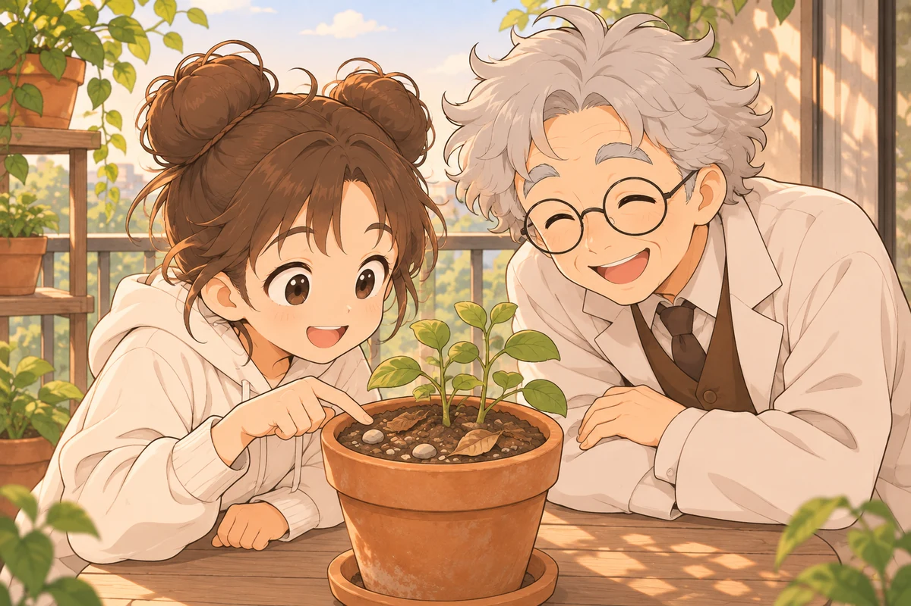
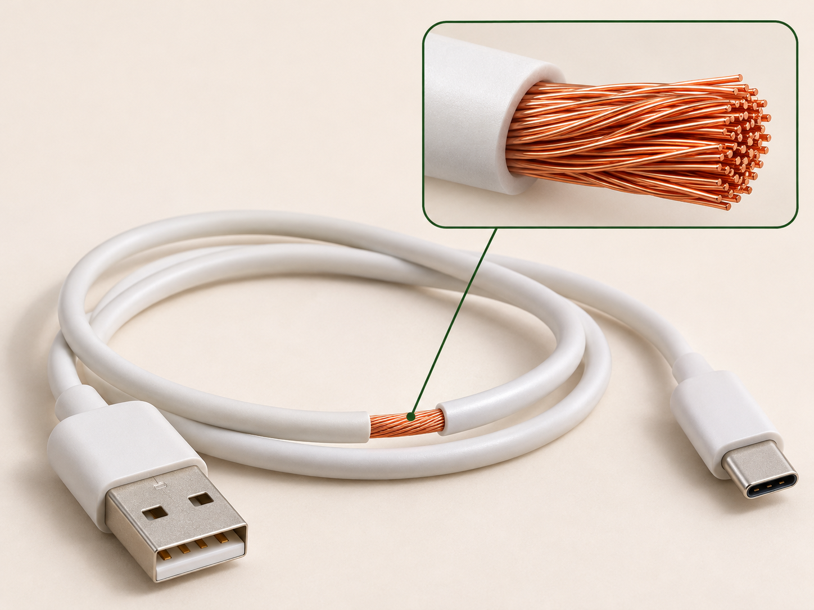

石墨
深灰至黑色
莫氏硬度約 1–2
莫氏硬度約 1–2
小葵和阿公整理陽台上的花盆時，小葵發現泥土裡有小石頭和枯葉。這些看起來不一樣的東西，會不會有相同的組成？人們又是怎麼知道它們是由什麼組成的呢？

元素觀念如何隨證據發展？
阿公，這盆土裡有小石頭和枯葉，泥土到底是什麼做的呀？
這個問題，古人也想過喔。他們曾把土、水、氣、火看成萬物的基本成分。
以日常對應事物作比較；古代四元素的意涵，不等於現代的物質分類。
查核資料：
原來古人說的土、水、氣、火，和現在說的元素不一樣！
對。人們透過觀察和實驗，逐漸對物質的組成有了新的認識。
金屬與非金屬的性質與用途
古人說的元素和現在不一樣，那鋁箔裡的鋁也是元素嗎？它怎麼可以做得這麼薄？
鋁是一種金屬元素，鋁箔是把鋁材壓薄做成的。不同元素的性質也各不相同。
| 已確認的樣品 | 外觀與狀態 | 導電性 | 延展性 | 相關用途 |
|---|
比較的是已確認的元素樣品。生活物品可能含合金、塗層與其他材料，不能直接把整件物品當成純元素。
金屬與非金屬性質的例外
剛才比較的金屬都能導電，那能導電的一定是金屬嗎？
還不能這麼肯定。剛才比較的只有幾種樣品，不能只靠它們就判斷所有物質。
石墨能導電
室溫下呈液態
| 樣品 | 已確認的類別 | 室溫狀態 | 導電性 |
|---|
帶走的理解：「通常」不等於「全部」。金屬與非金屬的典型性質有例外，不能只用一項性質斷定類別。
燈亮為依已知性質呈現的示意，實際亮度與電路配置有關；汞僅以密封樣品及資料比較。
元素名稱與符號的表示方式
這份寫「鐵」，另一份寫 Fe。原來是在說同一種元素！
有些符號只有一個字母，有些有兩個。第一個字母大寫，第二個字母若有，就要小寫。
F 大寫，e 小寫。
元素符號須依國際慣例書寫。
圖示為代表性樣品外觀；氫、氦以容器表示氣體，汞以密封樣品表示。
中文名稱有一些線索：「金」字旁常見於固態金屬，「石」字旁常見於固態非金屬，「气」部常見於氣態元素。但汞是室溫下的液態金屬，名稱沒有「金」字旁。偏旁是輔助線索，不能代替查核。
「金」字旁常見於室溫為固態的金屬名稱。
寫法要保留大小寫：銅是 Cu，不是 CU；氦是 He，不是 HE。
符號由國際慣例決定，不能只依中文字或英文首字母自行編寫；符號用來記錄已確認的元素身分，不是鑑定未知樣品的方法。
核對到碳的資料時，兩種看起來很不同的樣品，卻都標上 C。
碳的不同形態與性質差異
石墨和鑽石差好多，資料卻都標 C。我們是不是放錯頁了？
沒有。它們都由碳原子組成，不過碳原子連接和排列的方式不同，形成的結構也不同。我們看看模型，找找性質差異的線索。


同為碳元素，樣品外觀與硬度仍可差很多。
圖為樣品外觀示意，不是真實照片，也不是原子模型。表中比較室溫、常壓下的典型性質。
石墨和鑽石都是碳；碳原子連接方式不同，形成的結構也不同，進而影響硬度、導電和透光等性質。
每層內的原子牢固相連，層與層較容易滑動；石墨呈深色，也能導電。
碳原子向各方向牢固連成網狀，因此鑽石非常堅硬；純淨鑽石常可透明，也不易導電。
模型只呈現排列與連接方式，不表示原子實際大小或距離比例。
單元小測
先看線索，把樣本分類；放對位置後，才揭曉它的元素身分。

取出的線芯：樣本 A
根據線索，判斷樣本 A 應放在哪一區。
拖曳樣本卡，或點選分類區。
分類正確後，才會揭曉元素名稱與符號。
分類正確；看看性質與用途的關係
材料提醒：用品可能含合金、鍍層或混合材料；本冊的性質線索指向特定元素，不代表整件用品是純元素。